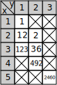

最大 K 乘积
问题
有一个 n 位十进制整数 i, 将其划分为 k 个整数，这 k 个整数的乘积称为 i 的一个 k 乘积。 对于给定的 和 k, 求 i 的最大 k 乘积
思路
将一个整数划分位 k 个整数，能不能将其转换为划分成 k-1 个整数的问题呢？ 如果可行，同理 k-1 个整数可划分为 k-2 个整数，直到剩下一个整数， 然后将这些划分组合起来，原问题就能求解出来了
事实上确实是可行的，可以这么想：
无论怎么划分，整数 i 的最后 1 位或者多位肯定被划分为一个整数（假设为 l 位），
那么除了这个整数，前面的 n-l 位必定被划分为 k-1 个整数。
假设将 i 划分成 k 个整数，最后一个整数为 l 位，这种情况为最大划分，
那么 i 前面的 n-l 位分成 k-1 个整数必定也为最大划分
可用反证法证明：
设 mkp[x][y] 表示 i 的前 x 位组成的数分成 y 个整数，这 y 个整数的最大乘积
设 num[a][b] 表示取 i 的第 a 到 b 位（包括 a, b 位且第一位为 num[1][1]）
那么 mkp[n][k] 就表示 i 共有 n 位，且将其分成 k 个整数的，这 k 个整数的最大乘积
假设将 i 划分成 k 个整数，最后一个整数为 l 位，这种情况为最大划分，
那么有如下等式成立：
mkp[n][k] = mkp[n-l][k-1] * num[l][n]
如果 mkp[n-l][k-1] 不是最大划分，那么必定有 mkp[n-l][k-1]' 为最大划分，即有
mkp[n-l][k-1] < 'mkp[n-l][k-1]
那么
mkp[n][k]' = mkp[n-l][k-1]' * num[l][n]
因为
mkp[n-l][k-1]' > mkp[n-l][k-1]
所以
mkp[n][k]' > mkp[n][k]
即 mkp[n][k] 不是最大划分，与上文 mkp[n][k] 为最大划分矛盾
以上证明了： 如果将 i 划分成 k 个整数，最后一个整数为 l 位，这种情况为最大划分， 那么 i 前面的 n-l 位分成 k-1 个整数必定也为最大划分
经过以上分析，我们能够得到如下结论：
mkp[x][y] = mkp[z][y-1] * num[z+1][x]
那么问题来了：我们不知道 z 的值，该怎么得到呢？
对于这个问题规模比较小的情况下，我们可以采用枚举法：
将 z 的所有可能值都取一遍，看看哪个 z 能使 mkp[z][y-1] * num[z+1][x] 最大，
这个最大值就是 mkp[x][y]
将以上所有思路整理一下，可得到如下最后的结论：
mkp[x][y] 表示 i 的前 x 位组成的数分成 y 个整数，这 y 个整数的最大乘积
num[a][b] 表示取 i 的第 a 到 b 位（包括 a, b 位且第一位为 num[1][1]）
mkp[x][y] = x, 当 y = 1 时，此时只分成一个整数，就是 x
mkp[x][y] = max{ mkp[z][y-1] * num[z+1][x] }, 其中 y-1 <= z < x, 当 y != 1 时
其中 x >= y 是肯定的，因为不可能把一个 n 位的整数分成 n+1 个整数（举个例子），
所以很好理解 y-1 <= z < x
代码
来举个具体的例子实践下吧，要不然都不明白我在说啥
方法和编辑距离是一样的，先把子问题求解出来，然后一步步求解原问题
比如：将 12345 分成 3 个整数
首先定义一个 mkp 矩阵，然后填入 y = 1 时候的值，如下图：

其中打叉叉的是不可能取到的值，y 不可能大于 x
然后是计算 y = 2 的时候：
先计算 mkp[2][2], 即计算 max{ mkp[z][1] * num[z+1][2] }, 其中 1 <= z < 2
...
计算 mkp[5][2], 即计算 max{ mkp[z][1] * num[z+1][2] }, 其中 1 <= z < 5
最后计算 y = 3 的时候，直到计算完 mkp[5][3], 即可得到原问题的解
填写好的矩阵如下：

这样应该可以写出代码了，代码如下：
#include <math.h>
int num(int i, int n, int a, int b)
{
return i / (int)pow(10, (n-b)) % (int)pow(10, b-a+1);
}
int max_of_mkpz(int n, int k, int mkp[n+1][k+1], int i, int x, int y)
{
int max = mkp[y-1][y-1] * num(i, n, y, x);
for (int z = y; z < x; z++) {
if (max < (mkp[z][y-1] * num(i, n, z+1, x))) {
max = mkp[z][y-1] * num(i, n, z+1, x);
}
}
return max;
}
int max_k_product(int i, int k)
{
int x, y;
int n = (int)log10(i) + 1;
int mkp[n+1][k+1];
for (x = 1; x <= n; x++) {
mkp[x][1] = num(i, n, 1, x);
}
for (y = 2; y <= k; y++) {
for (x = y; x <= n; x++) {
mkp[x][y] = max_of_mkpz(n, k, mkp, i, x, y);
}
}
return mkp[n][k];
}
可进一步优化
仔细审查计算过程，其实 mkp[4][1], mkp[5][1], mkp[5][2]; mkp[3][3], mkp[3][4] 是不用计算的
找到的规律是如下的 mkp 值不用计算：[4][2] 和 [5][3] 直线以下和 [5][3] 往上的值可不计算，
在图中表示出来如下所示：

直线可表示成 x - y = n - k
进而可写出如下代码：
#include <math.h>
/* 获取 i 的位数 */
int get_digital(int i)
{
int n = 0;
while (i != 0) {
i /= 10;
n++;
}
return n;
}
/* 获取 i 的第 a 到 b 位组成的数字 */
int get_num(int i, int n, int a, int b)
{
return i / (int)pow(10, (n-b)) % (int)pow(10, b-a+1);
}
/* calc max{ mkp[z][y-1] * num[z+1][x], y-1 <= z < x */
int max_of_mkpz(int n, int k, int mkp[n+1][k+1], int i, int x, int y)
{
int max = mkp[y-1][y-1] * get_num(i, n, y, x);
for (int z = y; z < x; z++) {
if (max < (mkp[z][y-1] * get_num(i, n, z+1, x))) {
max = mkp[z][y-1] * get_num(i, n, z+1, x);
}
}
return max;
}
/* plus version */
int max_k_product(int i, int k)
{
if (k == 1) {
return i;
}
int x, y;
int n = get_digital(i);
int mkp[n+1][k+1];
for (x = 1; x <= n-k+1; x++) {
mkp[x][1] = get_num(i, n, 1, x);
}
for (y = 2; y < k; y++) {
for (x = y; x <= n-k+y; x++) {
mkp[x][y] = max_of_mkpz(n, k, mkp, i, x, y);
}
}
return max_of_mkpz(n, k, mkp, i, n, k);
}
很容易看到，空间复杂度可进一步优化，每次只会用到 mkp 矩阵的 2 列。 但是写出来的代码就比较复杂了
分隔位置
其实我一直想知道分成的 k 个整数是哪几个，所以动手来实现吧
那么多子问题的解 mkp[x][y] 我们得想办法知道，使原问题取得最优解的那 k-1 个子问题
稍微分析一下可知，使 mkp[z][y-1] * num[z+1][x] 取得最大值的那个 z 就是分隔位置，
因为整个表达式的意思就是将整数 num[1][x] 分成 y 个整数的最优解，而 z 就是最后一个分隔位置
所以解法就很明确了，我可以先把所有子问题的 z 都保存下来。
当确定了原问题的最优解时，我们可以一步步往前推算各个 z.
比如我们知道了 mkp[n][k] 的最优解，且 mkp[n][k] = mkp[z][k-1] * num[z+1][n]
这其中的 z 就是最优解的一个分隔位置，然后计算 mkp[n][k-1] 的最优解的分隔位置，
直到算出整数 i 的第一个分隔位置
这部分的代码在下一节，无限精度
无限精度
如果我们使用 int 型来计算，能算的整数位数非常有限，只有 9 位，这远远达不到我们爱玩的心态
所以稍微研究了一下，可以使用这个库实现我们的想法， The GNU Multiple Precision Arithmetic Library
以下是代码，只是重要部分的
#include "mkp.h"
/* 获取 i 的第 a 到 b 位组成的数字 rnt */
void get_num(mpz_t rnt, struct i_info *i_info, int a, int b)
{
int n = i_info->len;
mpz_t pow;
mpz_t q;
mpz_init(pow);
mpz_init(q);
mpz_ui_pow_ui(pow, 10, n-b);
mpz_fdiv_q(q, i_info->i, pow);
mpz_ui_pow_ui(pow, 10, b-a+1);
mpz_fdiv_r(rnt, q, pow);
mpz_clear(pow);
mpz_clear(q);
}
/*
* 计算 max{ mkp[z][y-1] * num[z+1][x] }, y-1 <= z < x,
* 并返回使以上值最大那个 z
*/
int max_of_mkpz(mpz_t rnt,
int n, int k, mpz_t mkp[n+1][k+1],
struct i_info *i_info, int x, int y)
{
int maxz;
mpz_t temp;
mpz_init(temp);
get_num(temp, i_info, y, x);
mpz_mul(rnt, mkp[y-1][y-1], temp);
maxz = y-1;
for (int z = y; z < x; z++) {
get_num(temp, i_info, z+1, x);
mpz_mul(temp, mkp[z][y-1], temp);
if (mpz_cmp(rnt, temp) < 0) {
mpz_set(rnt, temp);
maxz = z;
}
}
mpz_clear(temp);
return maxz;
}
void process_two_dimensional_mpz(int n, int k, mpz_t mkp[n+1][k+1],
void process(mpz_t))
{
/*
* 不用考虑 k = 1 的情况
* 当这种情况发生时，max_k_product 直接返回 i 的值
* 不会用到 mkp[][]
*/
for (int y = 1; y < k; y++) {
for (int x = y; x <= n-k+y; x++) {
process(mkp[x][y]);
}
}
process(mkp[n][k]);
}
void max_k_product(struct mkp_info *rnt, struct i_info *i_info)
{
int k = i_info->k;
if (k == 1) {
mpz_set(rnt->mkp, i_info->i);
rnt->pos[0] = 0;
rnt->pos[k] = i_info->len;
return;
}
int x, y;
int n = i_info->len;
int pos[n+1][k+1];
mpz_t mkp[n+1][k+1];
process_two_dimensional_mpz(n, k, mkp, mpz_init);
for (x = 1; x <= n-k+1; x++) {
get_num(mkp[x][1], i_info, 1, x);
}
for (y = 2; y < k; y++) {
for (x = y; x <= n-k+y; x++) {
pos[x][y] = max_of_mkpz(mkp[x][y], n, k, mkp, i_info, x, y);
}
}
pos[n][k] = max_of_mkpz(mkp[n][k], n, k, mkp, i_info, n, k);
mpz_set(rnt->mkp, mkp[n][k]);
/* pos 存储的是断开位置，指向的是前一个数的最后一个数字 */
rnt->pos[0] = 0;
rnt->pos[k] = n;
for (y = k; y > 1; y--) {
rnt->pos[y-1] = pos[rnt->pos[y]][y];
}
process_two_dimensional_mpz(n, k, mkp, mpz_clear);
}